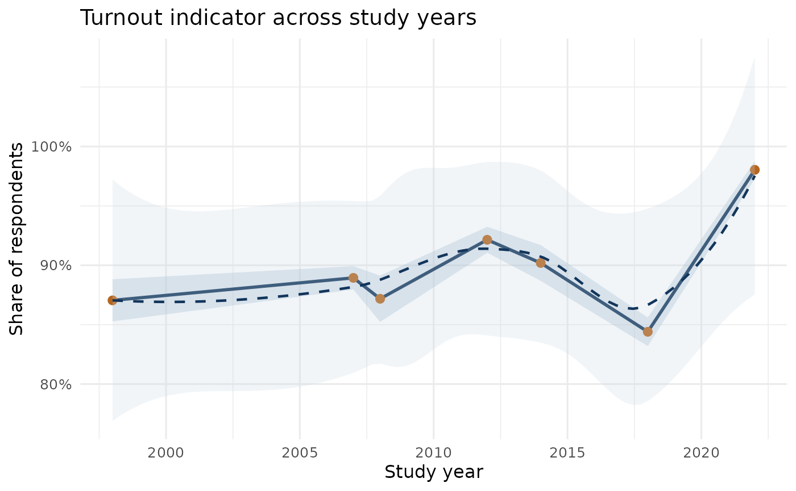

Skip to contents
Table 1: sample sizes by study
Sample sizes by study
| 1998 |
qes1998 |
1483 |
| 2007 |
qes2007 |
2175 |
| 2007 |
qes2007_panel |
2062 |
| 2007-2010 |
qes_crop_2007_2010 |
24026 |
| 2008 |
qes2008 |
1151 |
| 2012 |
qes2012 |
1505 |
| 2012 |
qes2012_panel |
844 |
| 2014 |
qes2014 |
1517 |
| 2018 |
qes2018 |
3072 |
| 2018 |
qes2018_panel |
1250 |
| 2022 |
qes2022 |
1521 |
Table 2: age-group composition by year (share %)
Age-group composition by year
| 1998 |
1482 |
25.3 |
46.8 |
27.9 |
| 2007 |
4197 |
23.9 |
39.5 |
36.7 |
| 2008 |
1125 |
23.2 |
42.4 |
34.4 |
| 2012 |
2349 |
28.6 |
41.8 |
29.6 |
| 2014 |
1517 |
26.2 |
38.8 |
34.9 |
| 2018 |
4052 |
26.4 |
24.7 |
48.9 |
| 2022 |
1521 |
25.3 |
32.3 |
42.4 |
Turnout indicator by year
| 1998 |
1483 |
1483 |
87.4 |
85.7 to 89.1 |
| 2007 |
4237 |
3897 |
88.9 |
88.0 to 89.9 |
| 2008 |
1151 |
1131 |
87.2 |
85.2 to 89.1 |
| 2012 |
2349 |
2330 |
92.1 |
91.1 to 93.2 |
| 2014 |
1517 |
1499 |
90.2 |
88.7 to 91.7 |
| 2018 |
4322 |
3131 |
93.0 |
92.1 to 93.9 |
| 2022 |
1521 |
1322 |
98.0 |
97.3 to 98.8 |

Notes
-
qes_crop_2007_2010 is excluded from year-trend
tables/plots because it does not contain a row-level year field.